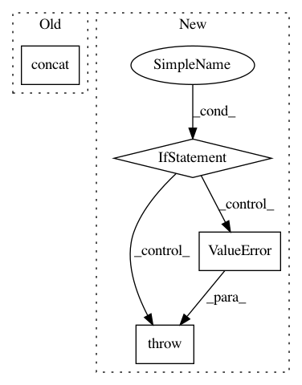

4ba63dbf0e5142603267d2e13ab0fb9762bd7151,QUANTAXIS/QAData/base_datastruct.py,_quotation_base,select_time_with_gap,#_quotation_base#Any#Any#Any#,765
Before Change
elif self.type[-3:] in ["min"]:
return _data.data[_data.data["datetime"] > time].head(gap).set_index(["datetime", "code"], drop=False)
return self.new(pd.concat(list(map(lambda x: __gt(x), self.splits()))), self.type, self.if_fq)
elif method in ["gte", ">="]:
def __gte(_data):
After Change
def lte(data):
return data.loc[(slice(None, pd.Timestamp(time)), slice(None)), :].groupby("code",axis=0,as_index=False,sort=False,group_keys=False).apply(lambda x: x.tail(gap))
return self.new(lte(self.data), self.type, self.if_fq)
elif method in ["eq", "==", "=", "equal","e"]:
def eq(data):
return data.loc[(pd.Timestamp(time), slice(None)), :]
return self.new(eq(self.data), self.type, self.if_fq)
else:
raise ValueError("QA CURRENTLY DONOT HAVE THIS METHODS {}".format(method))
def find_bar(self, code, time):
if len(time) == 10:
return self.dicts[(datetime.datetime.strptime(time, "%Y-%m-%d"), code)]
elif len(time) == 19:
In pattern: SUPERPATTERN
Frequency: 3
Non-data size: 4
Instances
Project Name: QUANTAXIS/QUANTAXIS
Commit Name: 4ba63dbf0e5142603267d2e13ab0fb9762bd7151
Time: 2018-06-04
Author: 604829050@qq.com
File Name: QUANTAXIS/QAData/base_datastruct.py
Class Name: _quotation_base
Method Name: select_time_with_gap
Project Name: broadinstitute/gtex-pipeline
Commit Name: 080080a547e9d89adf4393c2a349544443c35962
Time: 2017-08-18
Author: francois@broadinstitute.org
File Name: rnaseq/src/aggregate_rnaseqc_metrics.py
Class Name:
Method Name:
Project Name: asyml/texar
Commit Name: b5c8bdd81be77eac5434a476f62c5bdef56f1838
Time: 2019-07-01
Author: haoranshi97@gmail.com
File Name: texar/modules/embedders/position_embedders.py
Class Name: SinusoidsPositionEmbedder
Method Name: __init__